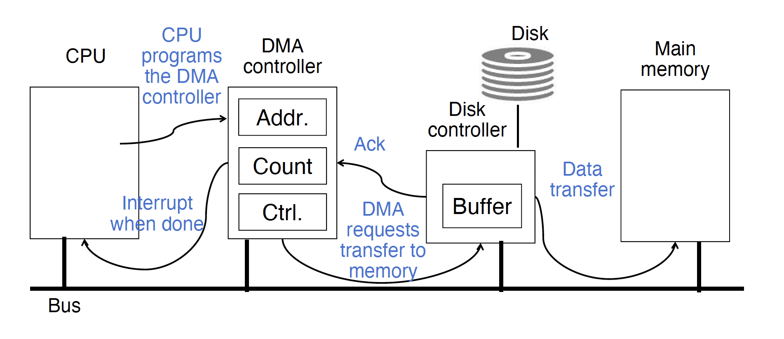

Operating System¶
OS¶
- Resource Management: CPU scheduling, memory allocation, and I/O device coordination.
- Process Management: Loading, isolating, and context-switching processes.
- System Call Interface: Provides
ecall(RISC-V) or software interrupt entry points for user programs to request file, network, and device services.
Boot¶
One of the first things that runs when your computer starts (right after firmware/bootloader)
What happens at Boot?
When the computer switches on, the CPU executes instructions from some start address (stored in Flash ROM)
- BIOS: Find a storage device and load first sector (block of data)
- Bootloader (stored on, e.g., disk): Load the OS kernel from disk into a location in memory and jump into it.
- OS Boot: Initialize services, drivers, etc.
- Init: Launch an application that waits for input in loop (e.g., Terminal/Desktop/...)
UEFI: Unified Extensible Firmware Interface¶
I/O, Interrupt & Exception¶
Memory-mapped I/O¶
Rate Mismatch¶
Polls vs. Interrupts¶
Processor: Polls vs. Interrupts
- e.g., "30 times per second"
- Processor reads from control register in loop
- Wait for device to set ready bit in control reg. (0→1) indicates "data available" (for input device) or "ready to accept data" (for output device);
- Then loads from/writes to data reg.
- I/O device resets control reg. (1→0)
- Avoid wasting processor resources for low data rate devices (e.g., mouse, keyboard)
- Processor runs as usual
- Occurs when I/O is ready
- Interrupt current program
- Transfer control to the trap handler in the operating system
Polling¶
I/O Polling Example¶
- Input: Read from keyboard into
a0
li t0, 0xffff0000 # ffff0000
Waitloop: lw t1, 0(t0) # control
andi t1, t1,0x1
beq t1, zero, Waitloop
lw a0, 4(t0) # data
- Output: Write to display from
a0
li t0, 0xffff0000 # ffff0000
Waitloop: lw t1, 8(t0) # control
andi t1, t1,0x1
beq t1, zero, Waitloop
sw a0, 12(t0) # data
Cost of Polling¶
Assume for a processor with a 1GHz clock it takes 400 clock cycles for a polling operation (call polling routine, accessing the device, and returning). Determine % of processor time for polling
- Mouse: polled 30 times/sec so as not to miss user movement
- Mouse Polling [clocks/sec] = 30 [polls/s] * 400 [clocks/poll] = 12K [clocks/s]
- % Processor for polling: 12*103 [clocks/s] / 1*109 [clocks/s] = 0.0012%
Polling mouse little impact on processor
Interrupts¶
- Interrupt program when I/O ready, return when done with data transfer
- Allow to register (post) interrupt handlers: functions that are called when an interrupt is triggered
Interrupt-driven I/O¶
- Incoming interrupt suspends instruction stream
- Looks up the vector (function address) of a handler in an interrupt vector table stored within the CPU
- Perform a jal to the handler (needs to store any state)
- Handler run on current stack and returns on finish (thread doesn’t notice that a handler was run)
Traps, Interrupts & Exceptions¶
- Interrupt - caused by an event external to current running program (e.g. key press, mouse activity)
- Asynchronous to current program, can handle interrupt on any convenient instruction
- Exception - caused by some event during execution of one instruction of current running program (e.g., page fault, bus error, illegal instruction)
- Synchronous, must handle exception on instruction that causes exception
- Trap - action of servicing interrupt or exception by hardware jump to "trap handler" code
Precise Trap¶
- All instructions before the faulting one have fully completed.
- No instructions after the faulting one have made any changes.
Process Management¶
More I/O¶
DMA¶
Allow I/O devices to directly read/write main memory
- New hardware: the DMA engine, contains registers written by CPU

DMA Incoming Data¶
-
Receive interrupt from device
-
CPU takes interrupt, begins transfer
- Instructs DMA engine/device to place data @ certain address
-
Device/DMA engine handle the transfer
- CPU is free to execute other things
-
Upon completion, Device/DMA engine interrupt the CPU again
DMA Outgoing Data¶
-
CPU decides to initiate transfer, confirms that external device is ready
-
CPU begins transfer
- Instructs DMA engine/device that data is available @ certain address
-
Device/DMA engine handle the transfer
- CPU is free to execute other things
-
Device/DMA engine interrupt the CPU again to signal completion
DMA Problems¶
Where in the memory hierarchy do we plug in the DMA engine?
-
Between CPU and L1:
- Pro: Free coherency
- Con: Thrash the CPU’s working set with transferred data
-
Between Last-level cache and main memory:
- Pro: Don’t mess with caches
- Con: Need to explicitly manage coherency
How do we arbitrate between CPU and DMA Engine/Device access to memory?
-
Burst Mode
- Start transfer of data block, CPU cannot access memory in the meantime
-
Cycle Stealing Mode
- DMA engine transfers a byte, releases control, then repeats - interleaves processor/DMA engine accesses
-
Transparent Mode
- DMA transfer only occurs when CPU is not using the system bus